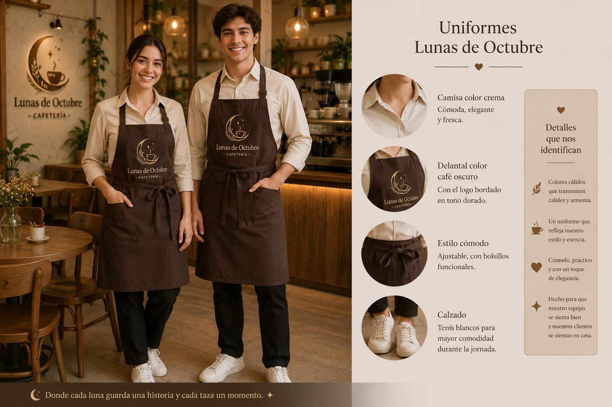
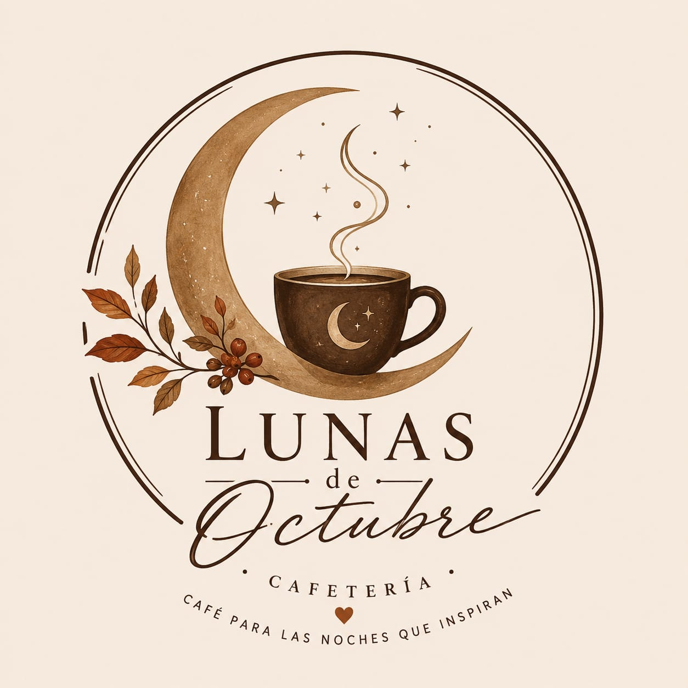
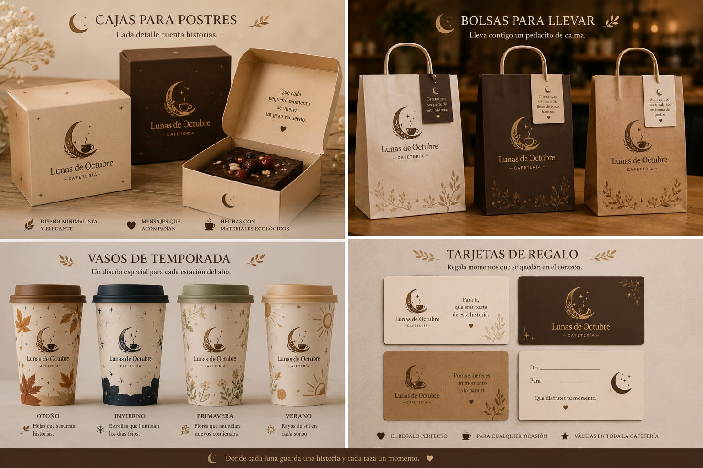

Nuestros uniformes
Crema y café oscuro con detalles dorados.

Lunas de OctubreCAFÉ PARA LAS NOCHES QUE INSPIRAN
Un rincón para disfrutar café, sabores especiales y esos pequeños detalles que hacen bonito el día.
Descubre nuestro menúNUESTRA ESENCIA
En Lunas de Octubre creemos que los pequeños detalles pueden convertir un día común en un recuerdo especial. Queremos crear un espacio acogedor para hacer una pausa, compartir algo rico y disfrutar sin prisa.
CADA DETALLE CUENTA
Desde los uniformes hasta los empaques para llevar, todo conserva la luna, los tonos cálidos y el estilo artesanal de Lunas de Octubre.

Crema y café oscuro con detalles dorados.

Empaques y vasos que llevan nuestra identidad.
RINCÓN DE INSPIRACIÓN
Comparte una frase, un pensamiento o un deseo para acompañar nuestro café.
TE ESPERAMOS
Pronto compartiremos aquí la ubicación, los horarios y los medios de contacto de Lunas de Octubre.
Volver al inicio ↑